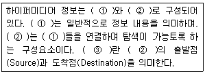
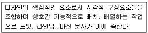
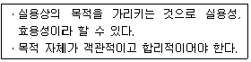
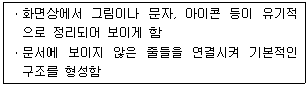
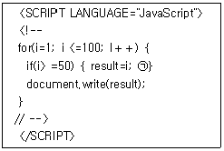

멀티미디어콘텐츠제작전문가(구) (2005-03-20 기출문제)
1과목: 멀티미디어개론
1. 데이터를 송수신하기 위한 일련의 규칙과 포맷의 집합을 의미하는 말은?
- 패킷(Packet)
- 블루투스(Bluetooth)
- 이더넷(Ethernet)
- 프로토콜(protocol)
(정답률: 알수없음)

2. 인터넷 기본 프로토콜(protocol; 통신규약)인 TCP/IP의 용어에 대한 영문 원어 표기로 올바른 것은?
- Translate Control Port / Internet Port
- Transmission Control Port / Internet Port
- Translate Control Protocol / Internet Protocol
- Transmission Control Protocol / Internet Protocol
(정답률: 알수없음)
3. 다음 중 전자 우편에 사용되는 프로토콜은 무엇인가?
- Telnet
- HTTP(HyperText Transfer Protocol)
- FTP(File Transfer Protocol)
- SMTP(Simple Mail Transfer Protocol)
(정답률: 알수없음)
4. 국제표준화기구(ISO)에서 제정한 개방형 시스템 간 상호접속 규정인 OSI(Open Systems Interconnection) 네트워크 프로토콜(prococol) 7계층의 기능 설명으로 잘못된 것은?
- 물리계층(physical layer)은 물리적인 매체를 통하여 비트스트림을 전송하는데 필요한 기능을 제공한다.
- 데이터링크 계층(Data Link layer)은 물리주소를 지정한다.
- 전송계층(Transport layer)은 전자우편의 전달과 저장을 제공한다.
- 세션계층(Session layer)은 대화를 구성하고 동기를 취하며, 데이터 교환을 관리한다.
(정답률: 알수없음)
5. 다음 중 IP 주소 241.1.2.3에 대한 설명으로 맞은 것은?
- netid는 241이다.
- netid는 11110이다.
- hostid는 1.2.3이다.
- 클래스(class)는 E이다.
(정답률: 알수없음)
6. 네트워크 패킷(Packet) 중에서도 실제 전송 데이터를 포함하는 부분은?
- 링(ring)
- 페이로드(Payload)
- 제어 요소
- 토큰(Token)
(정답률: 알수없음)
7. IPv6(Internet Protocol ver.6)에 대한 설명으로 틀린 것은?
- 새로운 기술이나 응용분야에 의해 요구되는 프로토콜의 확장을 허용하도록 설계되었다.
- IPv6는 3개의 주소 유형 즉, 유니캐스트, 애니캐스트, 멀티캐스트로 구성되어 있다.
- IPv6는 헤더가 확장되어, 패킷의 출처 인증, 데이터 무결성의 보장 및 비밀의 보장 등을 위한 메커니즘을 지정할 수 있다.
- IPv6에서는 64비트로 표현되어 264개의 주소가 가능하다.
(정답률: 알수없음)
8. 다음 중 CD-ROM(Compact Disc Read Only Memory)과 관련된 규격서는?
- 레드북(Red Book)
- 옐로우 북(Yellow Book)
- 그린 북(Green Book)
- 오렌지 북(Orange Book)
(정답률: 알수없음)
9. 멀티미디어 시스템에서 사용되는 출력 장치의 종류가 아닌 것은?
- 액정 디스플레이(LCD)
- 프로젝터(Projector)
- HMD(Head Mounted Display)
- 그래픽 태블렛(Graphic Tablet)
(정답률: 알수없음)
10. 다음 중 출력 장치인 CRT 모니터에 대한 설명으로 옳지 않은 것은?
- 섀도우 마스크(shadow mask)는 단위 영역당 픽셀의 개수를 나타낸다.
- 활성화율은 초당화면이 몇 번 칠해지는가를 나타내는 회수이다.
- 편광판에 적절한 전압을 가하면 전자빔을 원하는 위치에 도달하도록 할 수 있다.
- 빛의 삼원색인 Red, Green, Blue의 세 가지 색을 사용하여 화면을 표시한다.
(정답률: 알수없음)
11. 다음 멀티미디어 특징 중 디지털 정보에 대한 설명으로 옳지 않은 것은?
- 정보의 검색이 용이하다.
- 가공과 편집이 용이하다.
- 전송이나 출력에 의한 정보의 질적 저하가 있다.
- 상호작용성을 부여할 수 있어 상호대화 형태의 조작이 가능하다.
(정답률: 알수없음)
12. 애니메이션 모션 캡처 기법에 대한 설명 중 틀린 것은?
- 자기(Magnetic)방식의 모션 캡처는 다른 방식에 비해 조작이 쉽다.
- 모션 캡처는 인간의 움직임을 직접 캡처하여 움직임 정보를 3차원으로 저장한다.
- 자기(Magnetic)방식의 모션 캡처는 무선으로 컴퓨터에 연결되어 사용자의 행동이 자연스럽게 동작된다.
- 광학 방식의 모션 캡처는 자기(Magnetic)방식에 비해 성능이 뛰어나다.
(정답률: 알수없음)
13. 7.1 채널의 홈시어티에서 0.1 채널을 제공하는 스피커의 명칭은 무엇인가?
- 서브 우퍼
- 중앙 스피커
- 좌측 스피커
- 우측 스피커
(정답률: 알수없음)
14. 영상데이터 분류 중 저장형태의 분류에 해당하는 것은?
- 정지영상
- 동영상
- 비트맵영상
- 디지털영상
(정답률: 알수없음)
15. 다음 중 비디오 파일 포맷이 아닌 것은?
- AVI
- MOV
- ASF
- VOD
(정답률: 알수없음)
16. 다음은 VRML의 노드에 대한 설명이다. 이 중 센서노드를 설명하고 있는 것은?
- 물체에 색을 입히거나 질감을 표현한다.
- 물체의 표면에 텍스쳐라 불리는 2차원 이미지를 감싸는데 쓰인다.
- 사용자가 물체를 만지거나 어떠한 영역을 통과할 때 특정한 시간에 근거하여 작동하는 등의 기능을 한다.
- 무대 위의 조명과 같은 효과를 나타낼 때 사용한다.
(정답률: 알수없음)
17. 애니메이션 제작에 사용되는 기법의 설명 중에서 틀린 것은?
- 경로 기반 애니메이션은 등장물체를 움직이는 경로에 따라 배치하여 효과를 얻어낸다.
- 트위닝(Tweening)은 2개의 서로 다른 이미지 간에 서서히 서로 다른 모습을 보여주는 과정이다.
- 셀 애니메이션은 초기에 셀룰로이드라는 투명필름을 사용함으로써 시작되었다.
- 풀립북 애니메이션은 여러 장의 이미지를 하나의 파일로 저장하는 방법을 사용한다.
(정답률: 알수없음)
18. 컬러 모델 중 RGB 모델에 대한 설명으로 틀린 것은?
- 빛의 삼원색인 Red, Green, Bule가 기본이 된다.
- 검은색에서 시작하여 값들을 더함으로써 다른 칼라들이 생기기 때문에 가산모델(Additive Model)이라고 한다.
- 컬러 모델을 나타내는 3차원 좌표축에서 원점(0,0,0)은 흰색을 나타낸다.
- CRT 모니터 등 빛의 성질을 이용하여 컬러를 표현하는 곳에 많이 사용된다.
(정답률: 알수없음)
19. 래스터(Raster) 방식의 이미지 특징과 관련이 가장 먼 것은?
- 파일의 크기는 해상도에 비례한다.
- 픽셀 단위로 정보가 저장된다.
- 화면 표시속도가 벡터(vector)방식에 비해 느리다.
- 화면을 확대하면 화질이 저하된다.
(정답률: 알수없음)
20. 다음의 색표현 방식 중 컬러프린터 인쇄 시 주로 사용되는 방식은?
- RGB방식
- YUV방식
- HSB방식
- CMYK방식
(정답률: 알수없음)
21. 흑백 및 컬러정지 이미지의 압축 및 복원방식에 관한 국제표준안으로 디지털카메라, 스캐너 등의 저장 포맷으로 사용되는 것은?
- GIF
- PCX
- JPEG
- BMP
(정답률: 알수없음)
22. 다음 중 그래픽 파일 형식에 대한 설명으로 옳지 않은 것은?
- JPEG 형식은 GIF 형식에 비해 다양한 색상을 나타낼 수 있다.
- JPEG는 사진 압축에 유리한 포맷으로 웹에서 표준으로 널리 사용된다.
- GIF 형식은 24bit 트루 컬러(True Color) 색상으로 표현할 수 있다.
- GIF 형식은 Animation을 표현할 수 있다.
(정답률: 알수없음)
23. 웹을 통해 제공되는 데이터 중 일부 동적 데이터(애니메이션, 비디오)를 보려면 기본적인 웹브라우저로 화면에 표시해주지 못해 특정 소프트웨어가 브라우저상에서 연동되어야 하는데, 이러한 기능을 가진 프로그램을 의미하는 것은?
- 필터링(Filtering)
- 키프레임(Key Frame)
- 모핑(Morphing)
- 플러그인(Plug-in)
(정답률: 알수없음)
24. 이 부호화 방식은 통계적 부호화 방식의 일종으로, 빈번히 발생하는 데이터의 코드는 적은 비트로 표현하고, 빈번히 발생하지 않는 데이터는 많은 비트를 사용하여 부호화하는 압축기법은?
- 색참조 기법
- 객체부호화 기법
- 허프만 코딩
- 길이 압축기법(RLE)
(정답률: 알수없음)
25. 다음 ( ) 안에 적절한 용어를 순서대로 나열한 것은?

- ① 앵커 ② 링크 ③ 노드
- ① 앵커 ② 노드 ③ 링크
- ① 노드 ② 앵커 ③ 링크
- ① 노드 ② 링크 ③ 앵커
(정답률: 알수없음)
2과목: 멀티미디어기획및디자인
26. 마케팅 믹스란 마케팅효과를 극대화시키기 위한 작업이다. 다음 중 마케팅 믹스의 구성요소가 아닌 것은?
- 제품(Product)
- 가격(Price)
- 촉진(Promotion)
- 서비스(Service)
(정답률: 알수없음)
27. 소비자의 생활 유형(Life Style)에서 소비자 행동에 영향을 미치는 요인이 아닌 것은?
- 문화적 요인
- 활동적 요인
- 심리적 요인
- 사회적 요인
(정답률: 알수없음)
28. 아이디어 발상을 위한 사고법에서 심리학자인 에드워드 데보노 박사가 권장하는 사고의 방법은?
- 수평적 사고
- 수직적 사고
- 논리적 사고
- 추상적 사고
(정답률: 알수없음)
29. 대표적인 아이디어 발상기법의 하나로 특히 5-7명의 집단이 최적이며, 일정한 규칙을 지켜가며 전원이 자유로이 의견을 내는 기법은?
- 자유연상법
- 유비법
- 브레인스토밍
- 전문가시스템
(정답률: 알수없음)
30. 멀티미디어 시나리오 작성 시 적절치 않은 것은?
- 사용자의 참여를 적극적으로 유도한다.
- 명확한 목표와 목적을 부여한다.
- 즉각적인 피드백을 통해 맞고 틀림(true-false)을 명확히 한다.
- 이야기를 직선 구조로만 진행한다.
(정답률: 알수없음)
31. 웹사이트 디자인에 사용될 수 있는 스타일 기법의 예이다. 잘못 설명된 것은?
- 키치(kitsch)란 독일어 'kitschen'에서 유래된 말로 어딘지 촌스럽고 과장된 표현, 현란한 컬러, 그러나 사용자에게 편안함과 해학의 미를 전달하는 사이트를 말한다.
- 그런지(grunge)는 자유분방한 타이포의 배열, 이미지들의 겹침 등 선명하고 명쾌한 표현은 아니지만 사용자들에게 신선함을 선사하는 사이트를 그런지 스타일로 분류할 수 있다.
- 픽셀아트는 작은, 최소한의, 간소한 등의 사전적 의미를 가진 말로 텍스트, 이미지 등의 절제된 표현, 극도로 단순한 제작 방식으로 만들어진 사이트를 말한다.
- 스토리텔링은 사용자와 대화하는 형식으로 이루어지는 기법으로, 웹상에서 스토리텔링은 사용자를 이야기에 참여시켜 인터랙션을 유도한다.
(정답률: 알수없음)
32. 다음 중 디자인의 조건이 아닌 것은?
- 합목적성
- 심미성
- 경제성
- 안정성
(정답률: 알수없음)
33. 스토리보드의 표현 단위는?
- 타임라인(Timeline)
- 픽셀(Pixel)
- 파이카(Pica)
- 프레임(Frame)
(정답률: 알수없음)
34. 그래픽 디자인의 요소 중 이미 디자인된 활자를 디자인하는 것을 뜻하는 용어는?
- 픽토그램
- 타이포그래피
- 레이아웃
- 심볼
(정답률: 알수없음)
35. 좋은 웹 네비게이션 설계 시 고려해야할 사항으로 적절하지 않은 것은?
- 쉽게 익힐 수 있어야 한다.
- 사이트의 목적에 적합해야 한다.
- 사용자가 잘못된 명령을 내려도 옳은 명령을 내릴 때까지 기다려야 한다.
- 명확한 시각적 메시지를 제공해야 한다.
(정답률: 알수없음)
36. 다음 중 인터페이스 디자인의 원리에 대한 내용과 거리가 먼 것은?
- 사용자의 철저한 분석이 전제되어야 한다.
- 인간의 인지구조에 대한 기본적 이해가 반영되어야 한다.
- 시스템에 대한 친숙도, 컴퓨터 사용능력 등 교육수준과 지식 분석은 제외되어야 한다.
- 대상이 되는 사용자를 파악한 후 사용자의 다양성을 고려해야 한다.
(정답률: 알수없음)
37. 디자인의 원리 중 symmetry에 관한 설명으로 옳은 것은?
- 길이의 비례 관계를 말한다.
- 변화 속에서 통일감을 얻는다.
- 하나의 직선이나 곡선 또는 단순형태에서는 느낄 수 없다.
- 자연물 등의 대칭된 형태에서 느낄 수 있다.
(정답률: 알수없음)
38. 웹 이미지의 포맷 중 컴퓨서브(CompuServe)사에서 네트워크를 통한 그래픽 파일 전송을 위하여 개발한 포맷으로 모든 플랫폼이나 브라우저에서 같은 이미지를 볼 수 있도록 해주며, 사진보다는 문자나 심벌 등의 그래픽 이미지를 저장할 때 이상적인 포맷은 무엇인가?
- JPEG
- TIFF
- GIF
- PNG
(정답률: 알수없음)
39. 멀티미디어 타이틀 저작도구 중 타임라인 방식(Time-Line Based Tools)을 지원하는 저작도구는 무엇인가?
- 뷰어(Viewer)
- 디렉터(Directer)
- C＋＋
- 프론트페이지(Front page)
(정답률: 알수없음)
40. 그래픽을 표시하는 방법 중 벡터 방식의 이미지에 대한 설명으로 옳은 것은?
- 픽셀이라고 하는 점들의 집합이다.
- 각 픽셀은 하나 이상의 색상을 나타낼 수 있다.
- 래스터(raster)방식이라고도 한다.
- 이미지의 선, 곡선, 원 등의 (기하학적)구성요소를 수학적으로 표현한다.
(정답률: 알수없음)
41. 벡터그래픽(Vector Graphic) 파일 포맷으로 적당한 것은?
- GIF
- PCX
- EPS
- BMP
(정답률: 알수없음)
42. 그래픽 작업을 할 수 있도록 각 화면의 개략적인 구성과 글을 자세하게 기술하는 것을 말하는 것은?
- 스토리 보드(Story Board)
- 사운드 소스(Source)
- 그래픽 이미지(Graphic image)
- 텍스트(Text)
(정답률: 알수없음)
43. 형태, 크기, 색채 등이 실제 사실과 다르게 보이는 현상을 무엇이라고 하는가?
- 착각
- 무리도형
- 착시
- 형과 바탕
(정답률: 알수없음)
44. 멀티미디어 디자인에서 웹 페이지의 시각적 요소들에 대한 설명이다. 틀린 것은?
- 배경, 레이아웃, 아이콘, 헤더 등에서 이미지와 색채를 일관성 있게 사용해야 한다.
- 텍스트 사용에서 브라우저상에서 표현할 수 있는 글자체에는 한계가 있기 때문에 모든 텍스트를 그래픽 문자로 사용하는 것이 바람직하다.
- 웹 페이지에서 색은 그 페이지의 전체적인 분위기를 좌우하는 만큼 그 페이지의 주제나 내용과 연관성 있는 색을 선택한다.
- 사용자의 연상이나 경험과 관련된 시각 메타포를 사용하여 이해도를 높인다.
(정답률: 알수없음)
45. 디지털 폰트의 종류 중 고품질 출력을 중시하는 인쇄출판 시장을 겨냥해서 만들어진 서체로서, 어도비사에서 개발해 애플의 매킨토시에 적용하여 디지털 폰트의 새로운 장을 연 폰트는?
- 비트맵 폰트
- 오픈타입 폰트
- 아우트라인 폰트
- 포스트스크립트 폰트
(정답률: 알수없음)
46. 색의 혼합방법 중 감산 혼합에 대한 설명으로 맞는 것은?
- 색광혼합이라고 한다.
- 혼합할수록 명도가 높아진다.
- 색료의 혼합이다.
- 삼원색은 R(Red), G(Green), B(Blue)이다.
(정답률: 알수없음)
47. 픽토그램(Pictogram)에 대한 설명 중 옳지 않는 것은?
- 청각 전달의 기능을 주목적으로 한다.
- 언어를 대신하여 특정 대상의 특성이나 방법을 표현하는 그래픽 심벌을 말한다.
- 수명이 오래 갈 수 있는 조형성이 있어야 한다.
- 디자인 폴리시(Design Policy)에 의한 기초전략이 있어야 한다.
(정답률: 알수없음)
48. 다음 설명은 편집디자인의 구성요소 중 무엇인가?

- 레이아웃
- 타이포그래피
- 일러스트레이션
- 인쇄기법
(정답률: 알수없음)
49. 다음은 디자인의 조건 중 무엇에 대한 설명인가?

- 심미성
- 독창성
- 적합성
- 경제성
(정답률: 알수없음)
50. 레이아웃의 구성 원리 중 아래 설명에 해당하는 원리는?

- 비례
- 용이성
- 그리드
- 균형감
(정답률: 알수없음)
3과목: 멀티미디어저작
51. 컴퓨터에서 다중언어를 동시에 지원하기 위하여 설계된 문자 표시 코드의 국제 표준을 무엇이라고 하는가?
- Unicode
- KSC-5601
- Binary
- ASCII
(정답률: 알수없음)
52. 다음 중 웹문서의 확장자가 아닌 것은?
- html
- jsa
- asp
- php
(정답률: 알수없음)
53. 멀티미디어의 정보설계 방법 중 가장 단순한 구조로 연속된 일련의 정보를 순차적으로 볼 수 있게 구성하는 것은?
- 선형구조
- 계층구조
- 대화형구조
- 데이터베이스구조
(정답률: 알수없음)
54. 푸시(Push) 기술을 이용하여 주식정보 등을 사용자에게 제공하는 멀티미디어 콘텐츠는?
- 교육용 콘텐츠
- 정보형 콘텐츠
- 홍보용 콘텐츠
- 통신 콘텐츠
(정답률: 알수없음)
55. 컨텐츠 제작팀의 아트 디렉터에 속하지 않는 것은?
- 스크립터
- 애니메이터
- 일러스트레이터
- 그래픽 디자이너
(정답률: 알수없음)
56. 다음 중 멀티미디어의 특징으로 볼 수 없는 것은?
- 단방향성
- 비선형성(Non-Linear)
- 정보의 통합성(Integration)
- 데이터의 디지털화
(정답률: 알수없음)
57. 멀티미디어에서 다양한 미디어들을 합성하는 것은 매우 중요한 문제이다. 이와 관련하여 하이퍼미디어 망을 만들기 위한 합성 메커니즘은?
- 공간적 합성
- 시간적 합성
- 의미적 합성
- 절차적 합성
(정답률: 알수없음)
58. 플래시에서 인터랙티브 버튼을 제작할 경우 나타나는 프레임이 아닌 것은?
- Up
- Over
- Put
- Down
(정답률: 알수없음)
59. 플래시의 액션스크립트는 제한적인 객체지향 개념을 도입한 스크립트 언어이다. 다음 중 액션스크립트의 표현방식으로 잘못된 것은?
- 오브젝트.메소드()
- 오브젝트.속성
- 오브젝트.변수
- 오브젝트.심볼
(정답률: 알수없음)
60. 플래시 무비를 최적화 시키는 방법으로 적당하지 않은 것은?
- 무비에서 한번 이상 사용할 오브젝트는 심벌로 등록하여 사용한다.
- 외부에서 불러온 벡터 이미지는 Break Apart한 후, Optimize를 적용하여 불필요한 곡선수를 줄인다.
- 비트맵 파일은 되도록 동적인 요소로 사용한다.
- 필요 없는 프레임과 키프레임은 삭제한다.
(정답률: 알수없음)
61. 웹문서에 불러온 플래시 무비의 배경색을 투명색으로 지정하고자 한다. HTML 소스 안에서 설정해 줘야할 속성은?
- ＜PARAM NAME=vmode VALUE=alpha＞
- ＜PARAM NAME=vmode VALUE=Beta＞
- ＜PARAM NAME=wmode VALUE=opacity＞
- ＜PARAM NAME=wmode VALUE=transparent＞
(정답률: 알수없음)
62. 다음 중 자바스크립트(Javascript) 주석의 시작 기호로 맞는 것은?
- //
- */
- {
- /
(정답률: 알수없음)
63. 다음 중 자바스크립트(Javascript)에서 변수로 사용할 수 없는 것은 무엇인가?
- static
- ultra
- _new
- start
(정답률: 알수없음)
64. 자바스크립트의 변수명에 대한 설명 중 올바르게 설명한 것은 무엇인가?
- 변수를 사용하기 위해서는 반드시 먼저 변수형을 선언하여야 한다.
- 문자열과 정수를 더하면 정수가 된다.
- 숫자로 시작되는 변수명을 사용할 수 있다.
- 밑줄(_)로 시작되는 변수명을 사용할 수 있다.
(정답률: 알수없음)
65. 자바스크립트(JavaScript)에서 달력과 같이 현재의 날짜와 시간, 특정날짜를 구할 때 용이하게 사용할 수 있는 내장 객체는?
- String 객체
- Navigator 객체
- Date 객체
- Math 객체
(정답률: 알수없음)
66. 자바스크립트에서 Document에 포함된 객체 중 HTML 문서 안에 있는 ＜A NAME＞ 태그에 관한 정보를 배열로 포함하고 있는 객체는?
- Anchor 객체
- Applet 객체
- Link 객체
- Form 객체
(정답률: 알수없음)
67. 자바스크립트에서 배열의 요소 개수를 10개로 선언하는 방법은?
- sun_array = new Array(10);
- sun_array = Array(10);
- sun_array = new Array("10");
- sun_array = Array("10");
(정답률: 알수없음)
68. 다음 중 자바스크립트 상에서 예외 상황을 처리하기 위해 사용하는 것으로써 아무것도 없다는 의미를 갖는 것은 무엇인가?
- Null
- VAR
- String
- Boolean
(정답률: 알수없음)
69. 다음 중 자바스크립트(JavaScript)에 대한 설명으로 틀린 것은?
- 인터프리터(Interpreter)방식을 사용한다.
- 프로그램 소스가 노출되어 보안성이 상실된다.
- HTML 문서와 함께 사용되며 웹브라우저(Web Browser)에서 동작한다.
- 완벽한 OOP(Objective Oriented Programming)로 클래스(Class)를 가지고 있다.
(정답률: 알수없음)
70. 자바스크립트에서 객체(Object)에 대한 설명으로 잘못된 것은?
- 객체는 속성과 메서드(Method)를 갖는다.
- mul.mid와 같은 형식에서 mid는 객체를 의미한다.
- 정의해둔 객체를 생성할 때 사용하는 연산자는 new이다
- 객체를 정의하는 방법은 예약어 function을 사용하며 생성자 함수를 만들어 정의한다.
(정답률: 알수없음)
71. 다음은 XML 문법에 관한 내용이다. 가장 올바르게 설명한 것은?
- XML 선언할 때 ＜?와 XML" 은 띄어 써야 한다.
- XML 선언은 ＜?XML" 문자로 시작하여 /＞로 끝나야 한다.
- 주석은 ＜!-- 로 시작해서 --＞로 끝나야 한다.
- 속성은 반드시 encoding, standalone, version 순으로 기술되어야 한다.
(정답률: 알수없음)
72. 디렉터 무비를 쇽웨이브(shockwave) 무비로 변환하면 생성되는 확장자는?
- php
- dcr
- exe
- htm
(정답률: 알수없음)
73. 매크로미디어사의 멀티미디어 저작도구인 디렉터의 스크립트 언어는?
- C언어 프로그램
- 오픈 스크립트
- 액션 스크립트
- 링고 스크립트
(정답률: 알수없음)
74. 다음 중 HTML 태그의 설명이 옳지 않은 것은?
- ＜p＞ : 단락구분
- &nbsｐ; : 공백문자
- ＜br＞ : 행 구분
- ＜pre＞ : 들여쓰기
(정답률: 알수없음)
75. 다음 스크립트에서 출력되는 값이 50이었다면 ㉠에 들어갈 명령어로 가장 적당한 것은?

- switch
- start
- break
- continue
(정답률: 알수없음)
4과목: 멀티미디어제작기술
76. 인간의 움직임을 만들어내는 가장 자연스러운 방법으로 3차원 컴퓨터 애니메이션의 생성을 위해 가장 많이 사용되는 기술은?
- 모션 캡처(Motion Capture)
- 역운동학(Inverse Kinematics)
- 절차적 애니메이션(Procedural Animation)
- 키 프레임 애니메이션(Key-frame Animation)
(정답률: 알수없음)
77. 출판업계 등에서 주로 사용하는 기술로, 인간의 시각 시스템의 특징인 공간통합 기능을 이용하여 흰 배경에 서로 다른 밀도의 검은 점들을 출력함으로써 연속 색조를 가지는 영상으로 보이도록 하는 영상 처리 기술을 무엇이라 하는가?
- 이미지 워핑(Image Warping)
- 이미지 모핑(Image Morphing)
- 디지털 간색(Digital Halftoning)
- 이미지 변환(Image Transformation)
(정답률: 알수없음)
78. 다음 중 이퀄라이저(Equalizer) 기능으로 올바르지 않은 것은?
- 주파수들의 청감 손실을 보상할 수 있다.
- 소리의 명료도를 높일 수 있다.
- 소리의 공간감을 확장할 수 있다.
- 음색을 조정할 수 있다.
(정답률: 알수없음)
79. 다음 중 소리의 기본 요소에 대한 설명으로 적절하지 않은 것은?
- 주파수는 초당 파형의 반복 횟수를 의미하며 소리의 높낮이를 결정한다.
- 진폭은 사운드 파형의 기준선에서 최고점까지의 거리를 의미하며 소리의 크기와 관련이 있다.
- 같은 음의 높이와 크기를 가져도 악기마다 고유한 소리의 특징이 있는데 이런 특징을 음색이라 한다.
- 음압 레벨의 단위는 헤르츠(Hz)를 사용한다.
(정답률: 알수없음)
80. 디지털 서라운드 사운드에 관한 설명 중 틀린 것은?
- 디지털 서라운드 방식은 최대 5.1채널로만 이루어진다.
- Dolby Surround Digital은 AC-3 코딩을 기초로 두고 있다.
- Dolby Surround Digital과 DTS 방식의 포맷은 모두 데이터 압축이 이루어진다.
- Dolby Surround Digital과 DTS 방식의 포맷은 DVD 제작에 응용되고 있다.
(정답률: 알수없음)
81. 다음 중 어셈블 편집(Assemble Editing)을 설명한 것은?
- 타임라인상에서 두개 이상의 영상을 합성하는 편집
- 스위처, 오디오믹서 등을 이용한 효과편집
- 편집대본의 순서로 컷과 컷을 연결하는 기본적인 편집
- 일부분의 영상 또는 음성트랙에 다른 영상 등을 삽입하는 편집
(정답률: 알수없음)
82. 디지털 칼라의 색상 모드 중에 이미지에서 사용하는 색상만을 추려내어 팔레트 정보를 다시 구성하는 것으로 웹상의 이미지에서 많이 쓰이는 모드를 무엇이라 하는가?
- 비트맵 모드(Bitmap Mode)
- 그레이 모드(Gray Mode)
- 듀오톤 모드(Duotone Mode)
- 인덱스 모드(Index Mode)
(정답률: 알수없음)
83. MPEG-7에 대한 설명으로 틀린 것은?
- 다양한 멀티미디어 정보를 기술하기 위한 표준화 방안이다.
- 고화질 디지털 영상을 이용한 HDTV방송 실현을 목표로 한다.
- 멀티미디어 정보의 효율적인 색인화와 검색을 목적으로 하고 있다.
- 멀티미디어 정보의 제작, 전송, 저장, 유통 및 검색 분야에 활용될 수 있다.
(정답률: 알수없음)
84. 물체 경계면의 픽셀을 물체의 색상과 배경의 색상을 혼합해서 표현하여 경계면이 부드럽게 보이도록 하는 기법은?
- 디더링(Dithering)
- 앤티앨리어싱(Antialiasing)
- 투영(Projection)
- 모델링(Modeling)
(정답률: 알수없음)
85. 디지털 영상합성에서 영상의 이미지가 칼라 또는 흑백에 관계없이 회색의 음영값을 적용해서 원하는 키(Key)를 빼는(축출하는)방법을 무엇이라 하는가?
- Alpha Channel
- Luminance
- Image Matte
- Difference Matte
(정답률: 알수없음)
86. 그래픽의 파일 포맷은 래스터 방식(비트맵 방식)과 벡터방식으로 나뉜다. 다음 중 벡터 그래픽의 파일 형식인 것은?
- PCX
- WMF
- GIF
- JPEG
(정답률: 알수없음)
87. 디지털 영상에서 행과 열의 값으로 영상의 한 점을 표시하는 것을 무엇이라 하는가?
- 프레임(frame)
- 픽셀(pixel)
- 블록(block)
- 필드(field)
(정답률: 알수없음)
88. 다음 중 일반적인 오디오 CD음질에 해당하는 디지털 오디오 샘플링 사이즈와 샘플링 주파수 규격은?
- 16비트, 44.1kHz
- 16비트, 48kHz
- 24비트, 96kHz
- 24비트, 192kHz
(정답률: 알수없음)
89. 디지털오디오의 과정 중 아날로그 신호와 디지털 신호간의 변환 과정이 올바른 것은?
- 표본화→아날로그 신호→양자화→부호화
- 아날로그 신호→표본화→부호화→양자화
- 아날로그 신호→표본화→양자화→부호화
- 아날로그 신호→양자화→부호화→표본화
(정답률: 알수없음)
90. MIDI에 대한 다음 설명 중 가장 올바른 것은?
- MIDI는 일종의 디지털 전자 악기를 말한다.
- MIDI는 사운드 카드와 전자악기를 연결해주는 연결선을 말한다.
- MIDI는 디지털 악기 상호간의 통신 규약을 말한다.
- MIDI는 모든 디지털 건반악기를 말하는 것이다.
(정답률: 알수없음)
91. 인터넷을 통한 오디오 데이터의 전송과 실시간 재생은 필연적으로 오디오 데이터의 압축과 이를 실시간 재생되도록 풀어줄 수 있는 기법이 필요하다. 이 기법을 무엇이라고 하는가?
- 오디오 인코딩 기법
- 오디오 디코딩 기법
- 오디오 에디팅 기법
- 오디오 스트리밍 기법
(정답률: 알수없음)
92. 동영상이나 정지화상의 압축과 복원을 동시에 지원하는 기술은?
- PCM
- MODEM
- CODEC
- DVD
(정답률: 알수없음)
93. 동영상은 정지영상들이 모여서 이루어지는데 이때 각 정지영상을 무엇이라 하는가?
- 픽셀(pixel)
- 필드(field)
- 블록(block)
- 프레임(frame)
(정답률: 알수없음)
94. 다음 중 비, 불, 연기, 폭발 등의 자연 현상을 애니메이션으로 제작하고자 할 때 사용되는 효과로 영화 "트위스터"나 "화산고" 등에 사용된 된 특수 효과는 무엇인가?
- 로토스코핑
- 미립자 시스템
- 모션캡처
- 모핑
(정답률: 알수없음)
95. 일종의 txt파일로 실제적인 ASF 파일에 대한 정보를 가진 메타파일은?
- WMV
- ASX
- MOV
- RM
(정답률: 알수없음)
96. 정지화상이나 그래픽들을 연속적으로 보여주어 보는 사람으로 하여금 화상들을 연속된 동작으로 인식하도록 하는 애니메이션의 기본원리는?
- 모핑
- 잔상효과
- 역운동학
- 로토스코핑
(정답률: 알수없음)
97. 디지털 오디오에서 소리의 발생에서 소멸까지의 과정을 도식화한 Envelope의 구성요소가 아닌 것은?
- Attack
- Sustain
- Hold
- Echo
(정답률: 알수없음)
98. 어떤 사물의 형상을 전혀 다른 형상으로 점차 변형시키는 기법을 무엇이라 하는가?
- 모핑(Morphing)
- 크로마키(Chromakey)
- 애니메트로닉스(Animatronics)
- 매트 페인팅(Matting Painting)
(정답률: 알수없음)
99. 미디 시퀀싱 프로그램에서 시간과 음길이가 약간씩 어긋나게 녹음된 것을 자동으로 교정해주는 기능은?
- 오토 셔틀
- 퀀타이즈
- 패닉
- 오토 비트
(정답률: 알수없음)
100. 캠코더로 찍은 테잎의 내용을 필름 형태로 전환시키는 작업을 무엇이라고 하는가?
- 씨네룩(cinelook)
- 키네스코프(kinescope)
- 더빙(Dubbing)
- 텔레시네(Telecine)
(정답률: 알수없음)